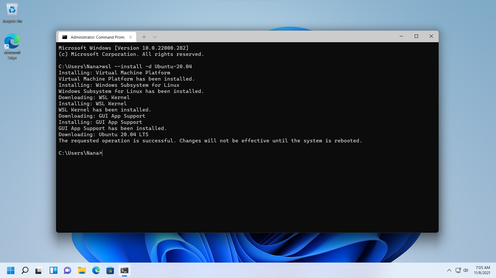
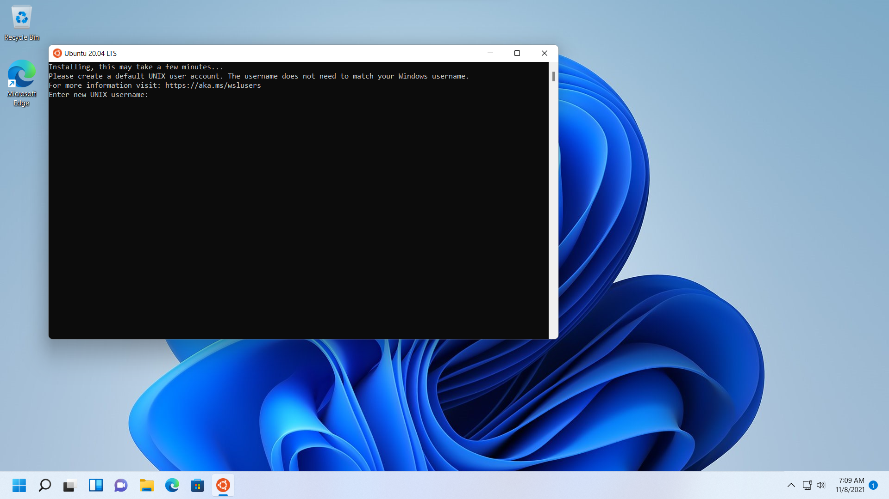

使用 Autoware.Auto 和 Windows 11 进行自动驾驶开发
去年夏天，当微软宣布 WSL 会添加 GPU 计算与 GUI 应用支持的时候，这件事让我兴奋了好几天。 因为当下一个 Windows 大版本可用的时候，我就可以捣鼓一个可以完全在 Windows 下运行的自动驾驶平台， 然后就可以对我所在的实验室的老师展示一波，毕竟他还是想把实验室的自动驾驶平台搞一个用于教育用途的版本， 而完全在 Windows 下运行切实的降低了志愿从事自动驾驶相关开发的开发者的入门门槛。
然而现实是骨感的，不仅下一个 Windows 大版本难产，而且我也因为诸如办公室政治这样的因素而离开了实验室而留下了遗憾。 直到一年半后的今天，我在北京有了一份体面的工作，跳票了很久的下一个 Windows 大版本即 Windows 11 也终于发布了， 我也想到了之前设想的事情，试了一下发现并不难，于是写下本文以供读者参考，顺便减少一些自己的遗憾。
预备条件
- 满足 Windows 11 最低硬件要求
- 支持启用硬件虚拟化
- 至少有 8GB 的物理内存
- 最好有 Pascal 或之后架构的 Nvidia GPU 且安装了最新驱动
安装 WSL 组件
本步骤将会安装以下内容：
- 虚拟机平台组件
- WSL 子系统组件
- WSL2 Linux 内核映像
- WSLg 图形应用支持组件
- Ubuntu 20.04 LTS 实例且启用 WSL2 模式
虽然安装 WSL 的方式有很多，最简单的还是以管理员权限运行命令提示符，仅需输入以下命令即可启用安装上述内容。
wsl –install -d Ubuntu-20.04

当出现类似图中的结果，那么代表着 WSL 组件安装成功，重启你的机器后即可生效。

如果一切正常，重启后会自动启动 Ubuntu 20.04 LTS 实例并让你设置用户名和密码，按照步骤设置即可完成 WSL 组件安装。
配置 Ubuntu 20.04 LTS 实例
众所周知，在国内的网络环境下使用 Ubuntu 首先要修改软件源映像地址，本文以 TUNA 镜像源为例。
首先执行以下命令将 Ubuntu 默认软件源替换为 TUNA HTTP 镜像源。
1 | |
然后执行以下命令并按照提示更新 Ubuntu 已安装包。
1 | |
如果你希望软件源改为 HTTPS，则可以执行下述命令。
1 | |
在 Ubuntu 20.04 LTS 实例安装 ROS 2 Foxy
首先输入下述命令设置并验证 locale 为 en_US.UTF-8。
1 | |
接着输入下述命令添加 ROS 2 Foxy 软件包源。
1 | |
最后输入以下命令并按照提示安装完整版 ROS 2 Foxy 包。
sudo apt-get install ros-foxy-desktop
在 Ubuntu 20.04 LTS 实例下载并编译 Autoware.Auto
首先输入以下命令并按照提示安装 Autoware.Auto 所需包。
sudo apt-get install git cmake python3-rosdep python3-vcstool python3-colcon-common-extensions
接着输入以下命令初始化 rosdep 环境。
1 | |
然后输入以下命令进入 ROS 2 Foxy 环境。
source /opt/ros/foxy/setup.bash
继续输入以下命令并按提示下载 Autoware.Auto 源代码和安装编译所需依赖。
1 | |
最后输入以下命令编译 Autoware.Auto。
1 | |
当上述命令成功执行，即在 Windows 11 上成功配置 Autoware.Auto 环境。
后记
这篇文章只是基本的讲述了如何在 Windows 11 上配置 Autoware.Auto 环境。
如果你需要在你的设备上进行仿真，还需要按照 Autoware.Auto 的教程去配置 SVL Simulator。
在每次重新编译 Autoware.Auto 的时候需要执行以下命令。
1 | |
在每次使用 Autoware.Auto 之前的需要执行以下命令。
1 | |
参考资料
- The Windows Subsystem for Linux BUILD 2020 Summary
- Install WSL
- Installing ROS 2 via Debian Packages
- Autoware.Auto - Installation w/o ADE
- Autoware.Auto - Building
- Autoware.Auto - Localization Demo using rosbag
相关内容
Windows 研究笔记本博客所有文章除特别声明外，均采用 CC BY-NC-ND 4.0 协议 ，转载请注明出处！